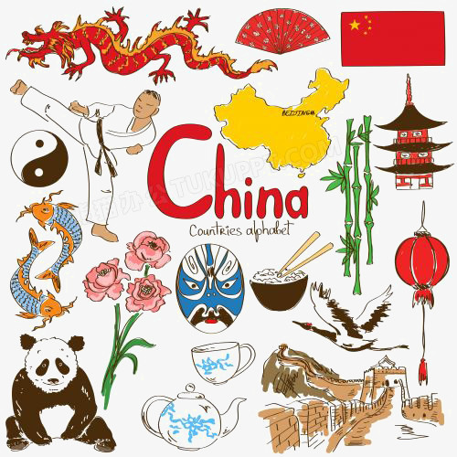
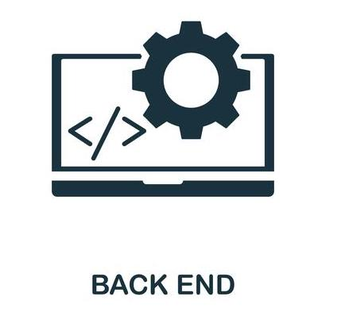
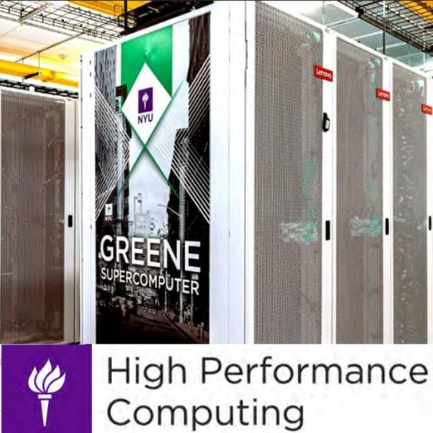

About me
My name is Yuwei Sun and I am an undergraduate student at New York University. My undergraduate major is computer science with minors in math and finance.
I am becoming a back-end programmer familiar with high-performance computing. I think it would be cool to combine high performance computing with backend development. Back-end services with strong computational power will be an important cornerstone of the AI era.
I worked as a student researcher at Soterea, where I trained Seg-Net models to help large vehicles make sense of sidewalks and bike paths. I also worked as a software development intern at OSFD and SkillUpIT, where I was involved in the development of a content site about Web3 and the backend of an online shopping site supporting high concurrency, respectively. Through my internships, I learned many technologies such as Python, Java, SQL, HTML/CSS, Spring Boot, Flask, Redis, RocketMQ, JIRA, TensoFlow. In addition to my internships, I participated in career programs such as Google HPS in 2022 and Uber UCP in 2023. Through them, I learned more about the difference between software engineers and hardware engineers, and I learned a lot about good engineers. Currently, I joined the NYU HPC program. I am preparing for SCC23 and looking forward to setting new records.
What i'm doing
-

Backend Development
Developing backend services using MySQL, RocketMQ, Redis, Microservices and SpringBoot.
-

High Performance Computing
As member of the NYU SCC23 team, I am responsible for HPCG, HPL, and Mystery Application.
-

Crypto Trading
Investing on BTC, ETH, PEPE and some NFTs related to MC.
-

Photography
I love taking photos while traveling.
Interests
-

-

-

-

-

- 
- 
- 